Differential Equation Home : www.sharetechnote.com
This page is not updated any more, please visit www.sharetechnote.com and click the following menu for the latest update. (If you click this menu, you will have sub menu on the left pannel).
I would say to many of friends and juniors working in engineering area "If you are good at two topics, Matrix and Differential Equations, you would be good at ANY of the engineering field." Of course, just being good at math would not automatically lead you to success in the field, but we cannot deny the fact that mathematical understanding is very crucial in most of engineering.
In this page, I would like to explain the basic concept of differential equation and it's applications as easy as I can do, but in some cases it is hard to avoid tackling the mathematical equations directly.
- What is Differential Equation ?
- Various ways of Representation
- Difference between Differential Equation and Algebraic Equation
- Terminology and Classification
- Why Differential Equation ?
- Modeling Overview
- How to get a Governing Equation ?
- Modeling Building Blocks
- Mechanical Building Block : Spring
- Mechanical Building Block : Damper
- Mechanical Building Block : Mass
- Mechanical Building Block : Spring-Mass
- Mechanical Building Block : Spring-Damper
- Mechanical Building Block : Spring-Mass-Damper
- Mechanical Building Block : Rotational Bar
- Mechanical Building Block : Rotational Damper
- Mechanical Building Block : Rotational Mass (Rotational Inertia)
- Modeling Examples :
- Mixing Problem(Single Tank)
- Mixing Problem(Two Tank)
- Mixing Problem (Three Tank)
- Physiologically Based Pharmacokinetic Model (Oxytetracycline Residues in Sheep)
- Velocity of Freefall Body
- Simple Pendulum - Newtonian
- Simple Pendulum - Lagrangian
- Single Spring
- Inverted Single Spring
- Inverted Spring-Mass with Damping
- Inverted Spring-Mass with Damping and Moving Base Line
- Inverted Spring-Mass with Damping and Moving Base Line and External Force
- Coupled Springs (Multi Spring)
- Electric Circuit Analysis
- Electro Mechanical System
- Differential Equation meeting Matrix
- Converting High Order Differential Equation into First Order Simultaneous Differential Equation
- Example : 2nd Order Homogeneous Lineare Differential Equation - System with No External Input
- Example : 2nd Order Non-Homogeneous Lineare Differential Equation - System with Single Input
- Example : Simultaneous Differential Equation (System Equation)
- Example from YouTube
- State Space Modeling
- Numerical Solution
What is Differential Equation ?
Just rephrasing the questions itself, we can get the answer to this question from the question itself as follows.
Differential Equation is a kind of Equation that has a or more 'differential form' of components within it.
Somebody say as follows. (This is exactly same as stated above).
Differential equation is an equation that has derivatives in it.
As you see here, you only have to know the two keywords 'Equation' and 'Differential form (derivatives)'.
Let's think about the first keyword 'Equation'. What is an Equation ? You can find so many different type of definition of Equation from various text books and pages from internet. One of the definition/explanation that I found the best is from a math site for elementary school student (http://www.mathsisfun.com/algebra/equation-formula.html)
An equation says that two things are equal. It will have an equals sign "=" like this:
x + 2 = 6
That equations says: what is on the left (x + 2) is equal to what is on the right (6)
So an equation is like a statement "this equals that"
According to this definition, 3 + 5 = 8 type of statement is also an Equation. But this kind of equation is not much of our interest. The type of equation that we are interested is the equation that has one or more variables (unknown values) as shown in the definition above.
For example, x + 2 = 6. 'x' is the unknown value in the equation. Solving the equation means 'finding the value for the variable' which satisfies the equation.
Now let's think about the second keyword, derivative (differential form). Unfortunately, you would not find such a nice definition as above from elementary school website because they don't learn it -:). So I would like to quote a definition from Wikipedia as follows. (http://en.wikipedia.org/wiki/Derivative)
the derivative is a measure of how a function changes as its input changes. Loosely speaking, a derivative can be thought of as how much one quantity is changing in response to changes in some other quantity; for example, the derivative of the position of a moving object with respect to time is the object's instantaneous velocity
Considering that derivative is expressed in the form of dy/dt or y' or df/dt, f'(t) etc. So differential equation can be described as any equation that contains components of dy/dt or y', y'', f'(t) etc.
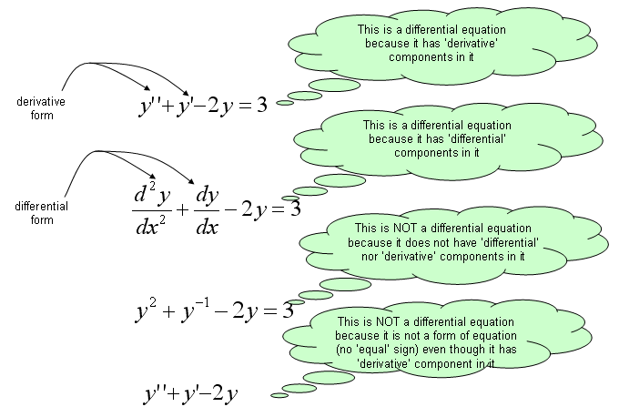
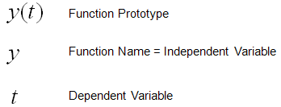
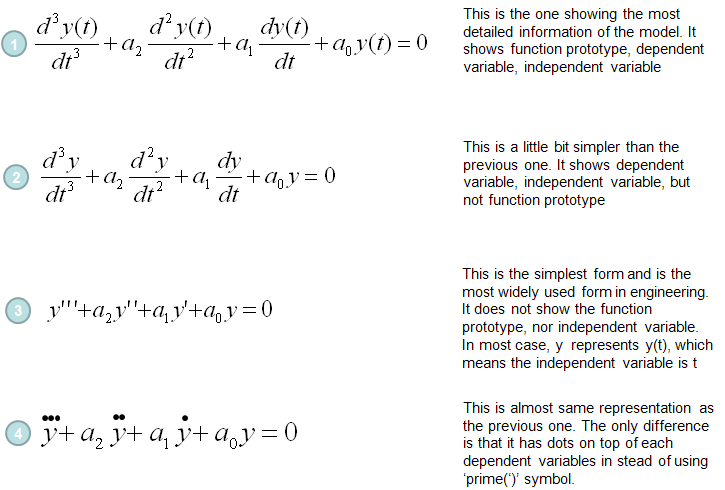
Difference between Differential Equation and Algebraic Equation
I think you would know what is Algebaic Equation. You may not be able to explain exactly what it is, but I am pretty sure that you would have some intuitive understandings on what is the algebraic equation.
One of the best way to learn a new area is to compare the new concept with the concepts which you are already familiar with.
Algebraic equation is to describe a relationship among multiple 'Numbers' and 'Finding the solutions' to an Algebraic equations is to 'find Numbers' that satisfy the equation.
Differential equation is to describe a relationship among multiple 'Functions' and 'Finding the solutions' to a Differential equations is to 'find Functions' that satisfy the equation.
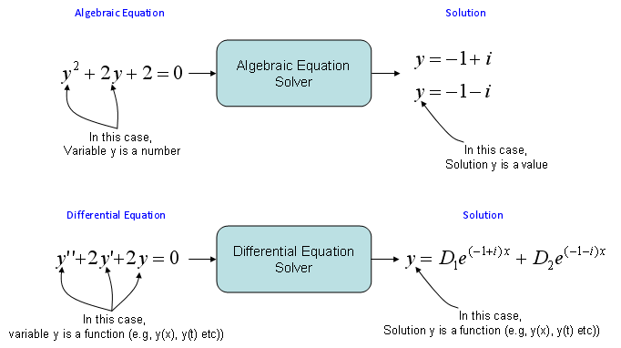
Terminology and Classification
One of the things that made me feel very confused (difficult) about the differential equation when I first read books were that there are so many different types of differential equations and I got confused with just those names, not to mention of solving the equations.
After struggling for long time, I came out with a couple of criteria that helps me a little bit clearer understandings of classification as illustrated below. If you just follow the path from the top to the bottom, you would get all the possible types of differential equations.. at least those names -:)
For example, you can follow through these arrows and come up with followings
- 1st order linear homogeneous ordinary differential equation
- 2nd order non-linear homogeneous ordinary differential equation
- 3rd order non-linear non-homogeneous ordinary differential equations
- ....
Why do we have to care about these classification and the confusing names ?
Unfortunately there is no single method that can solve all different types of differential equations. If you see the text books, there is specific method for the specific types. This naming/classification would be very helpful for you to find proper method for those equations given to you.
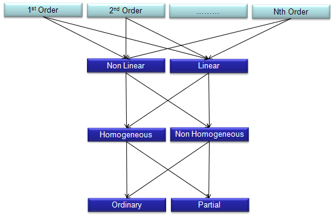
Now let's look into the meaning of each word in this classification path.
'Order' of a differential equation is explained in the following illustration.
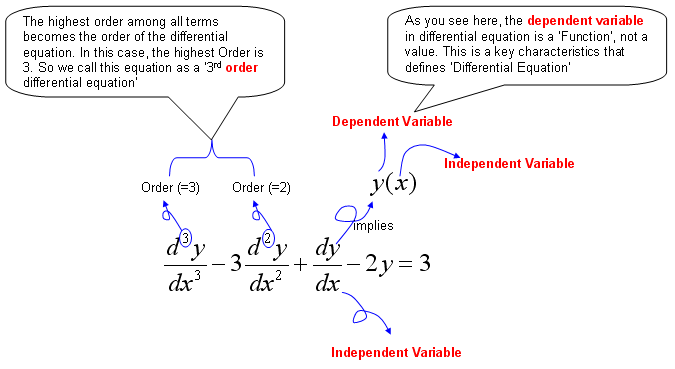
Homogeneous and Non-Homogeneous differential equations are defined as follows.

The difference between Ordinary differential equation and partial differential equation is explained in the following illustration.

Why we do the mathematical modeling ?
It is to predict something based on the rules of changes of a system.
Here we have two important tems marked in red, "predict" and "rules of changes".
Let's think about the first term "predict". What is definition of "predict" ? Two definitions that I found in internet are as follows.
- A prediction is a statement about the way things will happen in the future
- Say or estimate that (a specified thing) will happen in the future or will be a consequence of something.
In plain terms, 'predict', 'prediction' is to figure out NOW something that will happen in the FUTURE.
For this kind of prediction, we need some 'information' or 'knowledge' ? To predict something without any information or knowledge is impossible at least in science and engineering area. (It may be possible to predict something without any background information in fortune telling, but it is not called 'science' or 'engineering).
Then what do you mean by 'information' or 'knowledge' ?
Information (Knowledge) in this context is "rules of changes" for the things that we want to predict.
The "rules of changes" is given in most case in the form of "If something changes over time like this", "If something changes over space".
Now we have to critical terms to describe the background information for prediction
i) changes over time
ii) changes over space
as you would know, if we just convert these statement into mathmatical form it becomes as follows
i) changes over time = d (something)/dt
ii) changes over space = d (something)/dx
So the most of the prediction problem is given as follows.
i) If d (something)/dt = an expression(description), what will happend to the 'something' in the future ?
ii) If d (something)/dx = an expression(description), what will happend to the 'something' at the point which is far away from here ?
If you just convert the statements above into a mathematical form, it is a differential equation. I hope you got my point now.
Most of the mathematical methods are designed to express a realife problems into a mathematical language. This is called 'modeling', at least in engineering Mathematical Modeling is the most important reason why we have to study math.
With Matrix, Differential Equation is one of the most usefull tool for mathematical modeling and following illustration would show you a several different format of Mathematical Models derived from differential equation.
Usually (at least, in most of University Courses), the first step is to describe a system into a set of differential equations and convert those equations into Transfer Function (by Laplace Transform) and State Space Equations.
So it is very important to know the concept of differential equations, but as you repeat this kind of modeling process or work in a specific field for a long time, you would get the tricks to directly construct Transfer Function or State Space Equation without getting into the steps of building up the differential equation.
There are many engineering softwares out there to solve various engineering problems. Some of the tools requires you to input your problem in the form of differential equation, some others requires the input as Transfer Function and some others requires the input as State Space Equation. To utilize these tools as much as possible, you need to understand the concept of all these mathematical variations.
You will notice from the sample models in later sections that the most important step for modeling is to figure out 'Governing Equation' for the system.
Then you may ask "How can I get the governing equation for the system ?".
The simplest answer would be "use your common sense or intuition and try to make your own question about the system".
For example, let's suppose that you have a mass tied to the end of a spring in vertical direction and pulled the mass down and released it.
Possible questions for this case would be
- Where the mass will be at 2 seconds from now ?
- What would be the speed of the mass at 2 seconds from now ?
This is a good starting point, but these question by themselves does not generate the governing equations. You need some formal knowledge to figure out the governing equation that will give you the answers to your questions.
There are several useful rules that can lead you to a geverning equation. In case of mechanical system/dynamic system (system dealing with moving object), followings can be the most frequently used rules. Don't try just blindly memorize these rules and it would not help much. Just try to understand the meaning of these rules.
I would not explain any further about these equation. Try yourself to find materials from internet or text book. Try reading different sources as diverse as possible. Everybody would give you a little bit different aspect and insight. As you read through those sources, your brain would reorgnaize it by itself and you will get your own understanding of these rules.
If you have solid understanding of these rules, you would be able to follow through the example models in this post without any difficulties.

If you are dealing with any electrical/ectronic system, following rules can be a good source that lead you to a proper governing equation.
As I said in Introduction of Engineering Math page, Mathematics is a kind of language. In any kind of language learning, the first step is to learn the vacabularies/words and the rules to combine those words into a sentence. The intention of this section is to provide you a handy dictionary of words for a language called 'Differential Equation'. But don't try to blindly read through this section from the beginning to the ends. You may have not seen any person who is trying to bindly remember every words in a dictionary from the first page to the last page. Normally you would try to speak a simple sentence or you would hear somebody say some sentences and then you would look into a dictionary when you come accross any word that you don't know. You can use this section in the same manner. See 'Modeling Example' section first (these are kinds of sentences written in differential equation and get back to this section when you have difficulties in understanding how the sentence is derived)
I will start out with very short list of dictionary but I will keep updading this section to make it thicker and thicker.
< Mechanical Building Block : Spring >

< Mechanical Building Block : Damper >

< Mechanical Building Block : Mass>
< Mechanical Building Block : Spring-Mass >


< Mechanical Building Block : Spring-Damper >

< Mechanical Building Block : Spring-Mass-Damper >

< Mechanical Building Block : Rotational Bar >


< Mechanical Building Block : Rotational Damper >
< Mechanical Building Block : Rotational Mass (Rotational Inertia) >

< Electrical Building Block - Reister >

< Electrical Building Block - Inductor >

< Electrical Building Block - Capacitor >

This is one of the most common problems for differential equation course. You will see the same or similar type of examples from almost any books on differential equations under the title/label of "Tank problem", "Mixing Problem" or "Compartment Problem". But I think (hope) I will be providing the most detailed / step-by-step explanation -:)
To be honest I was not so good at solving this kind of problems when I first studying the problem even though it is only simple first order differential equation. Come to think of it, the reason why I was not so good at this was because I didn't clearly understand the steps through which we generate a differential equation from the description of the problem. That is, I was not so good at the modeling process.
One example for this kind of problems is as follows :
i) There is a tank which has a mixture of Water and Alcohole. (Total volume of the mixture(solution) is 1000 liter).
ii) The initial concentration of Alcohol is 10 % (it means that Water is solvent and Alcohol is solute)
iii) There is an outlet through which the solution is going out at the rate of 50 liter/min.
iv) There is an inlet through which a solution (mixture of water and alcohol) is coming in at the rate of 50 liter/min. The concentration of the alcohol in the incoming solution is 50%.
The question is what will be the concentration of the alcohol of the solution in the tank after 10 mins ?

The process of deducing the differential equation (modeling) is as follows. I think you have already went through a couple of examples of this kind in your Differential equation course (or you can search several tutorials of this kind in the internet) and see if the following process that I put down makes any sense to you.
Note : Don't you have any question at this point ? If you have the question saying "In the description of the problem, I see the statement 'the initial concentration of alcohol in the tank is 10%', but I don't see this condition is being used in the derivation of the equation. Does this mean that this initial condition is useless ?"
We don't need the initial condition at least for modeling process (the process of deriving the differential equation), but we need the initial condition when we solve the equation to get a specific values from the solution. (In this problem, the initial condition y(0) = 1000 liter of solution x 0.1 (10 % of concentration of alcohol) = 100).
Example : Mixing Problem (Two Tank)
If you haven't read the previous example (One Tank example), please go through it first and get back to this example and try to find what is the difference and what is common. and more importantly try to find some pattern of extending the logic of thinking on modeling.
Now we have another tank (the second tank) get connected to the first tank that I used in previous example. First, just take brief look at the diagrame espectiall the direction of arrows.

i) There are two tanks which has a mixture of Water and Alcohole. (Total volume of the mixture(solution) of Tank A is 500 liter and the volume of Tank B is 1000 litter).
ii) The initial concentration of Alcohol for Tank A is 0 % (it means that pure Water)
iii) The initial concentration of Alcohol for Tank B is 90 %
iv) There is an outlet for Tank A through which the solution is going out at the rate of 15 liter/min.
v) There are two outlets for Tank B and the solution is going out at the rate of 5 liter/min through one outlet and the solution is going out at the rate of 10 liter/min through the other outlet.
vi) There are two inlets for Tank A. A solution (mixture of water and alcohol) is coming in at the rate of 10 liter/min with the concentration of 10 % through one inlet and solution (mixture of water and alcohol) is coming in at the rate of 5 liter/min with the yet unknown concentration through one inlet.
vii) There are one inlet for Tank B. A solution (mixture of water and alcohol) is coming in at the rate of 15 liter/min with the yet unknown concentration through the inlet.
The question is what will be the concentration of the alcohol of the solution in the tank A and Tank B after 10 mins ?
Before jumping into the modeling process, let me give you a couple of questions that can easily be overlooked but important.
Would the volume of solution for each tank change over time ?
The answer is NO, the volume does not change over time. Most of this kind of problem from the text book are carefully designed so that the volum of tank does not change over time.
Why do they set the problem so that the volum of the solution in the tank does not change ?
It is because the mathematical equation will simpler under that condition.
Let's summarize some of the initial conditions and define some of the variables for modeling.
Now let's look into the governing law of this problem.
The rule is as follows and you will notice that this law is exactly same as what you saw in previous example (Single Tank case). The only difference is that Tank A has one more inlet.
Next step is to describe the amount of alcohol coming in and out of the tank A in mathmatical terms as follows. Overall the expressions are simple. The only thing you have to think a little bit is the expression for the concentration of alcohol for each tank. They are expressed as x/500 and y/1000. These can be expressed in this kind of simple manner because we set the problem so that the total amount of solution for each tank does not change over time. If the total volume of each tank changes, you cannot express it as a simple number like '500' or '1000'. You would need the functions (a function of t) describing the volume of each tank over time.


Now let's look into governing law for Tank B. Overall process is as follows and you will notice that the process (logic) is exactly same as you did for Tank A.

Mathematical expression of each terms of governing law (governing equation) are as follows.


Now we have each terms (components) of governing law for Tank A and Tank B. If you just combine those components according to the governing law you will get the following two differential equation.
Writing again the two equations into a simultaneous equation (system equation), we get the following.
This is done with modeling and you can solve the equations as it is, but some software require the system equations to be input in matrix format as follows.
Example : Mixing Problem (Three Tanks)
This is one-step further extention of the previous example. (Make it sure that you have gone through the previous two examples - single tank, two tank problems before you start this example).
Now we have another tank (the third tank) get connected to the second tank that I used in previous example. First, just take brief look at the diagrame espectiall the direction of arrows.

i) There are three tanks which has a mixture of Water and Alcohole. (Total volume of the mixture(solution) of Tank A is 500 liter and the volume of Tank B is 1000 litter and the volume of Tank C is 400 litter).
ii) The initial concentration of Alcohol for Tank A is 0 % (it means that pure Water)
iii) The initial concentration of Alcohol for Tank B is 0 % (it means that pure Water)
iv) The initial concentration of Alcohol for Tank C is 0 % (it means that pure Water)
v) There is an outlet for Tank A through which the solution is going out at the rate of 15 liter/min.
vi) There are two outlets for Tank B and the solution is going out at the rate of 5 liter/min through one outlet and the solution is going out at the rate of 13 liter/min through the other outlet.
vii) There are two outlets for Tank C and the solution is going out at the rate of 3 liter/min through one outlet and the solution is going out at the rate of 10 liter/min through the other outlet.
viii) There are two inlets for Tank A. A solution (mixture of water and alcohol) is coming in at the rate of 10 liter/min with the concentration of 10 % through one inlet and solution (mixture of water and alcohol) is coming in at the rate of 5 liter/min with the yet unknown concentration through one inlet.
ix) There are two inlet for Tank B. A solution (mixture of water and alcohol) is coming in at the rate of 15 liter/min with the yet unknown concentration through the inlet and solution (mixture of water and alcohol) is coming in at the rate of 3 liter/min with the yet unknown concentration through one inlet..
x) There is one inlet for Tank C. A solution (mixture of water and alcohol) is coming in at the rate of 13 liter/min with the yet unknown concentration through the inlet
The question is what will be the concentration of the alcohol of the solution in the tank A,Tank B and Tank C after 10 mins ?
Before jumping into the modeling process, let me give you a couple of questions that can easily be overlooked but important.
Would the volume of solution for each tank change over time ?
The answer is NO, the volume does not change over time. Most of this kind of problem from the text book are carefully designed so that the volum of tank does not change over time.
Why do they set the problem so that the volum of the solution in the tank does not change ?
It is because the mathematical equation will simpler under that condition.
Let's summarize some of the initial conditions and define some of the variables for modeling.
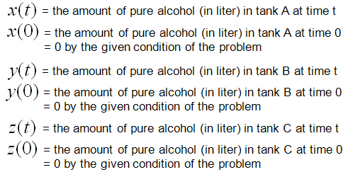
Now let's look into the governing law of this problem.
The rule is as follows and you will notice that this law is exactly same as what you saw in previous example (Two Tank case).
Next step is to describe the amount of alcohol coming in and out of the tank A in mathmatical terms as follows. Overall the expressions are simple. The only thing you have to think a little bit is the expression for the concentration of alcohol for each tank. They are expressed as x/500 and y/1000. These can be expressed in this kind of simple manner because we set the problem so that the total amount of solution for each tank does not change over time. If the total volume of each tank changes, you cannot express it as a simple number like '500' or '1000'. You would need the functions (a function of t) describing the volume of each tank over time.
Now let's look into governing law for Tank B. Overall process is as follows and you will notice that the process (logic) is exactly same as you did for Tank A.

Mathematical expression of each terms of governing law (governing equation) are as follows.


Now let's look into governing law for Tank C. Overall process is as follows and you will notice that the process (logic) is exactly same as you did for Tank A.
Mathematical expression of each terms of governing law (governing equation) are as follows.


Now we have each terms (components) of governing law for Tank A,Tank B and Tank C. If you just combine those components according to the governing law you will get the following three differential equation.


Writing again the three equations into a simultaneous equation (system equation), we get the following.
This is done with modeling and you can solve the equations as it is, but some software require the system equations to be input in matrix format as follows.

Physiologically Based Pharmacokinetic Model (Oxytetracycline Residues in Sheep)
This is a typical real life problem that can be extended from the mixing problems (tank problems) that we saw in previous examples.
This example came from the following reference. If you want to get further details, refer to following source.
J. vet. Pharmacol. Therap. 26, 5563, 2003.
A physiologically based pharmacokinetic model for oxytetracycline
residues in sheep
A. L. CRAIGMILL
Food Animal Residue Avoidance Databank,
Environmental Toxicology Extension,
University of California, Davis, CA 95616,USA
This is to model to see how a chemical injected into a body of an animal spread into all the organs and how the concentration of the chemical changes over time in each organs.
The diagram for the model is shown below. It would look complicated... it is. But this is real life problem and most of real life problems are much more complicated than the one you see in the textbook. But point is that even such a complicated model like this are based on the same logic that you learned from the text book. Of course it is not easy to recognize the direct relationship between the real life problem and the text book examples. However, don't get disappointed if you don't recognize the relationship within 5 mins or even within a couple of hours. For the realife problem like this, it would take a least several months just to understand the details and reach the point where you can draw mathematical formula. So very important characteristics that you should have in addition to mathematical skills is to have 'persistence', 'perseverance'.
Anyway... if you consider each organs of the following diagram to be a tank of mixing problem that we covered in previous examples, this model can be just a mixing problem with 7 tanks.

I would not want to describe each and every steps to draw out the differential equations from this model. I would just show the final outcome of the model from the reference. Just look at the equation and see if you can understand overal logics.

Example : Velocity of Freefall Body
Direction : Derive a differential equation that tells you the velocity of a falling body at any given time.
(Assume the condition where you should not ignore the air resistance)
What is the governing rule ?
Total Force applied to a body = Motion of the body


Note : This can be one of the simplest modeling example, but it doesn't mean that you should be able to understand everything here in 5 minutes and you are dumb if you don't understand this so quickly. I hope you would have a lot of questions that has not clearly been explained in my explanation above and that has not been treated in your math course. For example, my own questions are like this. The explanation said the air resistance can be expressed as -kv, but how did you know that ? Juding from the expression, it seems that the air resistance is determined only by the velocity ? How did you guarantee that the resistance is not influenced by other factors like acceleration, mass of the falling body ? How about the shape of the falling body or paraschute ? Doesn't this influence the resistance force ? Judging from our common sense, the shape/size of the paraschute definately influence the resistance force. How come this term is not shown in the mathematical expression, -kv ? what does 'k' mean ? How can we determine this value ? what kind of factors are involved in determining k value (Actually, the shape of paraschute or falling body can be a very important factors to determine the k value). Like this, we can have an endless list of questions boggling in your mind if you are really doing the mathematical modeling in stead of rotely memorizing whatever your textbook or teach tells. I am not saying that you always have to raise your hand in your math class and argue with your math teacher until you get the answers to all of these kind of questions. These are the questions you continue to investigate to expand this kind of basic model to a better/real life models.
Example : Simple Pendulum - Newtonian
Now let's look at another famous example, 'Simple Pendulum (Single Pendulum)'. Governing Law is same as other dynamic system saying "Total Force being applied to a moving body represents the motion of the body". Basic format is derived from F = ma. The only difference is that Pendulum is for rotational motion whereas F=ma is for linear movement, but the basic concept is same.
Following is each components of the government equation for the simple pendulum.

As shown above, the key factor in the governing equation is Torque and you may ask "Where does this Torque come from ?". In another word, what is the source of the torque.
The source of the torque comes from the gravity from the Earth since we don't apply any additional force to the pendulum. You just lifted up the pendulum and just let it go. You didn't push the pendulum and just let it go. So the only source of the driving force is gravitational force. The gravitational force is applied in the direction as shown on the right side of illustration below.

Then how can I derive the torque from the gravitational force ?
If you just draw a couple of additional arrows as shown below, you would easily figure out the Torque from high school trigonometry.

With this understanding and the first illustration, you would get a differential equation as follows.

With a little bit of methematical touch, you would get much simpler equation as show below.
The equation shown above is the pendulum with no damping (e.g, no resistence by air and any other frictions).
Now let's look at the case where the damping gets involved. You would the differential equation with damping just by adding an additional arrow show in red below.
If you just 'READ' the illustration shown above, you would get the following differential equation.

Example : Simple Pendulum - Lagrangian


Example : Coupled Spring (Multi Spring)
The examples in this section will be very usefull to model various mechanical system. You would say "This is just two springs or three springs connected to each other.. doesn't look like very useful". But there are many mechanical problems that can be described in the form of multiple masses connected to each other with springs. For example, you can model an entire automobiles with several hundreds masses connected to each other by several undreds springs and can analyze how the each parts of the whole car vibrate when you drive it along a bumpy road.
You may think this kind of simple two or three spring model is not related to such a complicated model for the entire car, but in reality the logic and process of modeling is exactly same. You would just have several dozens of differential equations in stead of two or three equeations, which is very similar to what you see here.
Don't worry about solving a system differential equation which is made up of several hundred equations. Nobody do it by hand. There is a lot of computer tools to do this. Your job is to fill in the parameters or sometimes mathmatical equations to such tools and to do that you have to understand the meaning/logics of the mathematical model.
< Example : Two coupled spring without damping >
Now let's look into a little bit more complex spring model as shown below.

At the first look, you may be overwhelmed by the complexity of the situation. But don't be scared, there is an easy way to do the modeling for this kind. The trick is to split the problem into multiple single spring situation. Then you can use the logic that you have learned in the single spring model. (Note : This is a model which may be simpler than the real life system. First, you don't see any external forces applied to any of the mass. Also, you don't see any friction (or damping) is applied to the mass. It means the movement of the mass is only determined by spring force).
In this example, we can split the whole system into following two single spring model. As you see, the governing rule is same as the one we saw in the single spring model. (If you get familiar with this kind of splitting method, you can easily do the modeling for a system with even 100 mass/springs. Logic would be the same. You would get 100 differential equations of single spring-mass. that's it).
If you can draw a diagram as shown above and express the behavior of each component in a mathmatical form, it is the end of modeling. You already complete the modeling of this system. But to convert the model into a set of differential equations that is familiar to us, let's rearrange the each of the mathematical components.
Let's start with the model for the first mass-spring component. Actually the first line can express the physical meaning of the model the best, but for mathematical convinience or for applying other analytic method, we often do this kind of rearrangement, but there is no single best expression. if you see various textbooks, you would notice that everybody would use a little bit different format. So just pick one of this form and trying to memorize it would not have any practical use.. try to understand the meaning of each component in stead of memorizing the equation.

Let's start with the model for the second mass-spring component. A

Through the process described above, now we got two differential equations and the solution of this two-spring (couple spring) problem is to figure out x1(t), x2(t) out of the following simultaneous differential equations (system equation).
This is the end of modeling. But some textbook likes to express this kind of simultaneous equations into a matrix form as follows. This is just a different ways of expression but sometimes looks very intimidating. (This is just a psychological issues that I mentioned the introduction page).
< Example : Two coupled spring with Damping >
This example is just half step extension of previous example. It is made up of two mass and three springs which is the same as in previous example. The only difference is that damping factors are introduced as shown below.
If you have followed through the previous examples, you may know what to do by now.
i) Split the given model into each component
ii) Define the governing rules for each component.
This is the procedure for any kind of mathemtical modeling.
The governing rule of the first component is as follows. Overall logic is
i) Define all the forces being applied to the object
ii) Draw arrows represending the direction of the force (Be very careful of determining the direction of arrows since it determines the sign of the mathematical term)
iii) Write the mathematical formula to each of the forces (arrows)

Next step is to combine all the mathematical components of each arrow and the motion of the movement into a single equation as follows. The first line is the orginal form. All the other lines are just rearrangement of the first line, so mathematically they are all same. You can just pick whatever you want for your needs/preference, but the last one and the second-to-the-last one are the most common forms.

Do the same thing for the second component as shown below.
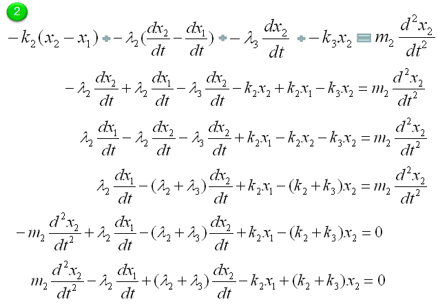
Now we have two differential equations for two mass (component of the system) and let's just combine the two equations into a system equations (simultaenous equations) as shown below.
In most cases and in purely mathematical terms, this system equation is all you need and this is the end of the modeling. But in some case you may want to convert these system equations into a set of the first order equations as follows. (If you are not familiar with this kind of conversion process, refer to Converting High Order Differential Equation into First Order Simultaneous Differential Equation)
Once you have a set of differential equation which are all first order, you can easily convert it in the form of Matrix equation as shown below. (If you are not familiar with this kind of conversion, refer to Differential Equation meeting Matrix)

< Example : Inverted Spring-Mass with Damping >
Now let's look at a simple, but realistic case. Let's assume that a car is moving on the perfactly smooth road. This can be illustrated as follows. The body of the car is represented as m, and the suspension system is represented as a damper and spring as shown below. (Note: You may ask why the gravitational force being applied to the mass is not considered here. It is because of the assupmtion that the equilibrium point is set so that the gravitational force is cancelled out. See the Simple Spring example about the equilibrim point)

The differential equation can be represented as shown below. I will not describe the steps to come up with this equation. Try yourself to figure out how to derive this equation based on previous examples. You would not have much difficulties for it.
< Example : Inverted Spring-Mass with Damping and Moving Base Line >
This example is similar to previous example, but has one additional factor. In this example, the car is not moving along a smooth road. it is moving a long a bumpy road as illustrated on the left side. This can be modeled in a similar way to the previous example except that the base line is moving as illustrated on the right side.
The differential equation can be represented as shown below. I will not describe the steps to come up with this equation. Try yourself to figure out how to derive this equation based on previous examples. You would not have much difficulties for it. You would notice that another displace variable y2 is introduced in this equation.
If the car is moving on perfectly harmonic surface, the y2 can be expressed as a trigonometric function (e.g, cos(w t)) and the w can be determined by the speed of the car. So with this equation, you can figure out how the body of the car will move up and down when the car is moving on a bumpy road with a certain velocity.
< Example : Inverted Spring-Mass with Damping and Moving Base Line and External Force>
This example is similar to previous example, but has one additional factor. In this example, the car is moving along a bumpy road and it also is under some external force. (In most case, the car is experencing various internal vibration and the vibration can be a kind of external force). This can be modeled in a similar way to the previous example except that the base line is moving as illustrated on the right side.
The differential equation can be represented as shown below. I will not describe the steps to come up with this equation. Try yourself to figure out how to derive this equation based on previous examples. You would not have much difficulties for it. You would notice that another displace variable y2 is introduced in this equation.
If the car is vibrating in a harmonic function with a certain frequency and the F can be expressed as a trigonometric function (e.g, cos(f t)). So with this equation, you can figure out how the body of the car will move up and down when the car is moving on a bumpy road with a certain velocity and the body is also expericing vibration.
< Example : Coupled spring - Vehicle Suspension System >
You can practice what you learned from the previous two examples and this is the one that can be easily extended for a real life problem. You can easily apply this example to model a suspension system of a vehicle.
It may look a little bit scary, but the logic of the modeling is always the same however complex system it is.
Do you remember the logic (process) ?
i) Break down the system into each component. (When you see this kind of spring-mass system, each Mass is the building block of the system).
ii) Draw the arrows (vectors) to represent the direction of Forces being applied to each component.
iii) Write down mathematical formula for each of the arrows (vectors).
iv) Combine all the component formula into a single differential equation

Now Let's start with the first component. Can you identify the component ? M1 is the first component. Mark all the springs, damper and applied force for the component as shown below.

Now draw arrows (vectors) to represent forces being aplied to the component (Mass) as shown below.
Now combine each component formula into single differential equation as shown below.
Now Let's start with the second component. Can you identify the component ? M2 is the first component. Mark all the springs, damper and applied force for the component as shown below.

Now draw arrows (vectors) to represent forces being aplied to the component (Mass) as shown below.

Now combine each component formula into single differential equation as shown below.
With a little bit of operation, you can simplify the equation into the one as follows.

If you combine the equation for component 1 and component 2, you would get a system equation as follows.

I wouldn't do this here, but I recommend you to try to convert this into a matrix form. It will be a good practice for first order conversion and matrix form conversion.
Example : Electric Circuit Analysis


Example : Electro Mechanical System


Differential Equation meeting Matrix
As you may know, Matrix would be the tool which has been most widely studied and most widely used in engineering area. So if you can convert any mathemtical expressions into a matrix form, all of the sudden you would get the whole lots of the tools at once.
So it would be a very meaningful to ask following question :
i) Is it possible to convert a certain form of differential equation into a matrix form ?
ii) If the answer to question i) is YES, is it possible to convert ANY differential equations into a matrix form ?
iii) If the answer to question ii) is "Not ANY, but SOME", what kind of differential equations can be converted into Matrix form ?
The answer to the question i) is YES.
The answer to the question ii) is "NOT Always"
The answer to the question iii) is "Linear Homogeneous Differential Equations" or "Linear Non-Homogeneous Differential Equation". (Basically Matrix itself is a Linear Tools. That's why you learn it at "LINEAR Algebra course" -:)
Isn't there any way to use Matrix to solve Non Linear Homogeneous Differential Equation ? It is not possible as it is, but if you can convert the Non Linear Equations into a linear equation (Basically this is a approximation within a certain range of domain), it would be possible to use Matrix (I will explain on this 'linearization' process later in other section).
Let's look into the details of the process to convert a differential equation into a matrix form. As you would have learned in Matrix pages, you would need a set of simultaneous equations to construct a matrix. In this case, you would need a set of simultaneous differential equations to construct a matrix.
Let's suppose we have a set of simultaneous differential equations as follows. (This is a form of linear homogeneous simultaneous equations). For now, let's not think about the meaning of these equations.. let's just suppose it's given to us. (Note that y1, y2 here are function of x, it is not a value. It is a function which can be represented as y1(x), y2(x))

You can easily notice that this simultaneous equations can be converted into following matrix form.

You can simplify this representation even further as shown in the following process. At the end you would have very simple equation y' = A y. This simplified form would look very nice in mathematically, but it looks scary to a lot of readers if you don't know the detailed process of how these equations were derived).

Once you have a set of differential equations represented in Matrix form, you can use a lot of powerful Matrix tools to solve the problem. I will just write the final form of solutions of this form. The solution of this matrix equation is presented as follows. As you see, a special matrix analysis tool called "Eigenvalues" and "Eigenvectors" are used to describe the solution of the differential equation. Sometimes it would be pretty complicated to calculate Eigenvalues and Eigenvectors especially as the size of the matrix gets bigger and very large portions of your text book tend to get thicker because they try to explain a lot of this calculation process, but I would not explain anything about how to calculate "Eigenvalues" and "Eigenvectors" because you can easily get these values using Matlab, Octave, Mathematica etc and in reality almost nobody would calculate these values by hand). Important thing is to understand the mathematical expression as shown below. Even this, it would be a little difficult to have intuitive understanding without have some concrete examples, but I would add some examples later... for now at least try to understand the meaning of this form based on what you understand about Eigenvalues and Eigenvectors.
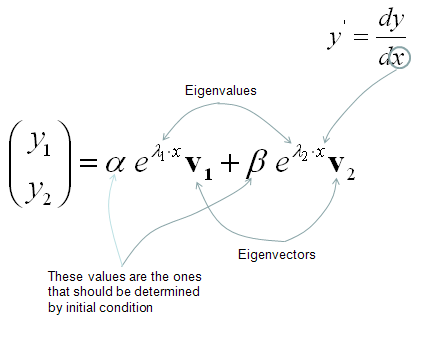
You may think this matrix form would not be useful in many case since there would not be many cases where we have a set of simultaneous equations. But it is not true. Actually this kind of simultaneous differential equations are very common. Sometimes it is given directly from modeling of a problem and sometimes we can get these simultaneous differential equations by converting high order (same or higher than 2nd order) differential equation into a multiple of the first order differential equations. Following is one example of this case.
Let's suppose we have a following 2nd order linear homogeneous differential equation.
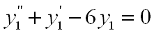
You can get a set of simultaneous differential equation being made up of two first order linear homogeneous differential equations. I hope that following illustration would be explicit enough.
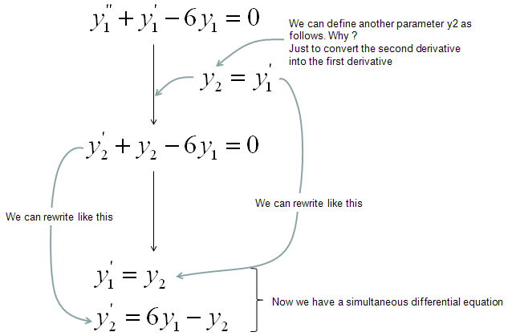
Once you have this multiple equations, you can easily convert it into a matrix forma as follows.

There is another type of linear differential equation which is linear non-homogenous differential equation. As I mentioned at the beginning of this section, it is also possible to convert this into a matrix form.
Let's assume that we have a set of simultaneous differential equation as follows.
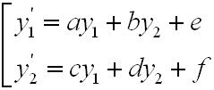
You know that this set can be represented in Matrix form as follows.
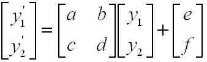
You can simplify this even further by the following process. You don't need this simplification if you don't like, but it is good to know at least since many literature use this kind of simplified form.

The solution of this form can be expressed as follows. As you see, most part is exactly same as homogenous case. there is one additional term at the end.
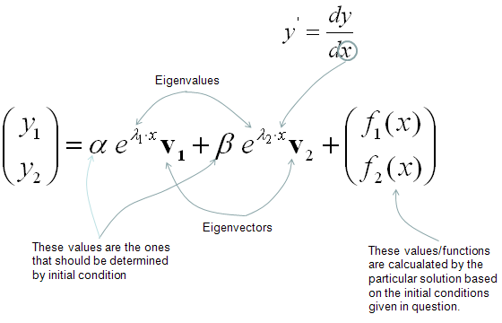
Converting High Order Differential Equation into First Order Simultaneous Differential Equation
As far as I experienced in real field in which we use various kind of engineering softwares in stead of pen and pencil to handle various real life problem modeled by differential equations. This would be very important topics but I have seen almost no textbook which touches this kind of topics in detail. In many case, they just shows the final result (a bunch of first order differential equation converted from high order differential equation) but not much about the process.
Let's assume that we have a higher order differential equation (3rd order in this case).
Our goal is to convert these higher order equation into a matrix equation as shown below which is made up of a set of first order differential equations.
We will look into the process of the conversion through some examples in this section, but before going there, I want to mention a little bit about why we need this kind of conversion.
Why do we want this kind of conversion ? Just to give us another type of headache ? Of course not -:)
As shown in the following illustration, once we get a bunch of first order differential equations out of Higher order equation, we can
i) use them more easily for numerical processing to solve the problem (See Differential Equation pages of Matlab/Octave)
ii) convert into a matrix form in which we can use a lot of linear algebra tools to analyze/solve the equation
iii) (Mostly in Control System theory) convert into a state space model which can be analyzed by various tools specially designed for State Space analysis tool. (See Differential Equation pages of Matlab/Octave)

Now let's look into the detailed process for this conversion through following examples.
< Example : 2nd Order Homogeneous Lineare Differential Equation - System with no external input >
Let's assume that we have a 3rd order differential equation as follows.
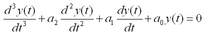
There can be several different way for the conversion, but my trick is like this. First, I look for the order of the equation and replace all the terms of lower than the order with different variables. Since this is 3rd order differential equation, I will replace 2nd, 1st, 0th term with other variables as shown below.
You can also do this replacement process as shown below. The method shown above would give you mathematical meaning of the replacement process, but once you fully understand the mathematical meaning the method shown below would be a handy shortcut for this process.
As you see above, I replaced the 0th, 1st, 2nd order term with x1,x2,x3 respectively. If we plug in these variable into the original equation and do a little bit of rearrangement, we get the following equation.

If you collect all the equations which is the first order, you would get following three equations. In this case, the first two equations were directly from our definition and the third one is from original equation.

This is the end of the process, if you want to solve this differential equations in a numerical method as explained in this page. But if you want to convert this set of simultaneous equations into a matrix form, it would be good to revise the equations as follows.
Now you will easily convert these simulteneous equation into a matrix form as follows.

Now I have another equation. This is almost same as the first equation but only one minor diference. (I would strongly recommend you to go through the first example before you go through this example).

As we did in the first example. I look for the order of the equation and replace all the terms of lower than the order with different variables. Since this is 3rd order differential equation, I will replace 2nd, 1st, 0th term with other variables as shown below.

Here goes the second method again. You can pick whatever method you like.

As you see above, I replaced the 0th, 1st, 2nd order term with x1,x2,x3 respectively. If we plug in these variable into the original equation and do a little bit of rearrangement, we get the following equation.
If you collect all the equations which is the first order, you would get following three equations. In this case, the first two equations were directly from our definition and the third one is from original equation.

This is the end of the process, if you want to solve this differential equations in a numerical method as explained in this page. But if you want to convert this set of simultaneous equations into a matrix form, it would be good to revise the equations as follows.

Now you will easily convert these simulteneous equation into a matrix form as follows.
From the equation above, you lost y(t). You can express y(t) in generic form as follows.
Now you have to figure out unknown values marked above. You can figure out those unknown values as shown below.

Combining the two matrix equations that we built from the long procedure described above, you can have a set of matrix as shown below. This form of matrix equation is called 'State Space' matrix equation.

< Example : Simultaneous Differential Equation (System Equation) >
Previous example shows how we can convert one higher linear order differential equation into a single matrix equation. In this example, I will show you the process of converting two higher order linear differential equation into a sinble matrix equation. If you extend this procedure, you can convert any number of higher order differential equations into a single matrix equation.

You see two variables (more specification, two functions x(t) and y(t)) in this equations and two differential terms x'(t), y'(t). Now let'sdefine these functions and differentials as follows.

If you substitue the original equations with the variables that you defined above, you get a new equations as follows.
If you combine the new equations and your definitions so that first order diffential forms are at the right side and all the remaining terms are on the right side.

Now you can convert the above equations into the following format. Do you know why I am doing this kind of conversion using many of '0' terms which does not have much meaning in mathematical sense ?
It is to convert this simultaneous equations into the matrix form.

Now you can easily convert this equation into a matrix form as shown below.

State Space Modeling is also a kind of way to convert a differential equation into a set of matrix equation. But the way we did in previous section (Differential Equation meeting Matrix) was mainly for mathematical manipulation. It was not easy to extract any practical meaning out of the matrix. However, State Space Modeling is a method to convert a/a set of differential equation(s) into a form of matrix equation from which we can extract physical/practical meaning of a system.
The logic behind the State Space Modeling is as follows.
For most of differential equations (especially those equations for engineering system), there would be terms that can be interpreted as an input to a system and terms that can be interpreted as output of the system.
For example, if you have a system with an input function labeled as u(t) and output function labeled as y(t) as shown below.
You may be able to mode this system in a differential equation as shown below.
Giving you more practical examples, the very common spring system and spring-damper systems can also be described as single input and single output system and can be described in a form of differential equation shown above. (Actually you can interprete all the examples in Modeling Building Block section into an input/output relations)


You can also think of a system with multiple inputs and multiple outputs as shown below.
Regardless of how many inputs and outputs you have, there is a certain form of differential equation (linear differential equation) that can be converted into a set of Matrix equation as shown below. The special matrix form as shown below is called 'State Space Model'.
The state space mode for a single input and single output can be modeled as shown below.

The state space mode for multiple inputs and multiple outputs can be modeled as shown below. Can you notice what is the difference between this equation and previous equation ? In single input/single output equation, you would notice that y(t) is a single function whereas in multiple input/single output equation y(t) is a vector (a set of functions). Similarly you would notice that u(t) is a single functionin single input/single output equation whereas y(t) is a vector (a set of functions) in mutiple input/single output equation.
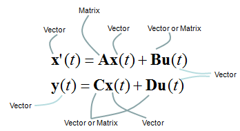
One thing you have to be very careful about the state space modeling is the dimension of A, B, C, D matrix/vector which is described as shown below.
How to figure out A,B,C,D matrix/vector out of a differential equation or a set of differential equations ? I will put down several samples from the simplest ones to complicated ones later when I have time. For now, just refer to <Example : 2nd Order Non-Homogeneous Lineare Differential Equation - System with Single External Input > as an example. You can easily get A, B from the process explained in Converting High Order Differential Equation into First Order Simultaneous Differential Equation, but you may put some thought and effort to figure out C and D (especially C).
Why we want to convert a or a set of differential equations into this form (State Space Model) ?
It is because
- There are many analysis methods developed for this form
- Many of the computer software requires this form as the description of the system (implying that this form is very useful to solve a differential equations with computer in numerical method).
< State Space Model Example : Simple Spring-Mass >
Let's look into a simple example as shown below. It is a spring-mass system with friction. You can think of the friction as a damping.

Now you can derive the two first order differential equations as shown below. (I will not show you each and every steps of how to draw these equations. I just assume that you became familiar enough to draw differetial equations for such a simple system like this).
If we determine the input, state variables and output as shown below, (these are the ones YOU determine. Depending on how you determine these variables, the state space matrix varies. When you first read text about state space modeling, you may ask "Why they picked as the control variables ?", "Why they picked this as the input and that as the output ?". Basically it is totally upto the textbook writer. Theoretically you can determine those variables in any way you like as long as you can define proper differential equations using those variables).
The first matrix equation with A, B matrix is just direct conversion of the set of differential equations into matrix form, so there should be no ambiquity about it. But the second matrix equation with C, D matrix may not look straightforward. Actually the second matrix with C, D matrix become a little different depending on which variable you want to get as the output of the system. If you want to take v as the output, it become as follows.

If you want to take x as the output, it become as follows.

Once you build up this kind of state space model, you can get the solution of these system with various software package. (See Damped Spring-mass example in Matlab/Octave differential equation page)
< State Space Model Example : RLC Circuit >
Let's take a RLC circuit as another example as shown below.
If we determine the input, state variables and output as shown below, (these are the ones YOU determine. Depending on how you determine these variables, the state space matrix varies. When you first read text about state space modeling, you may ask "Why they picked as the control variables ?", "Why they picked this as the input and that as the output ?". Basically it is totally upto the textbook writer. Theoretically you can determine those variables in any way you like as long as you can define proper differential equations using those variables).
 these
these
The state space model become as shown below. (I will leave it to you to derive this equation or just use this equation -:)
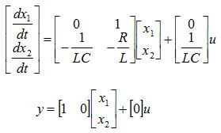
If you are interested in the solution of this equation, see State Space Model - RLC in Matlab/Octave Differential Equation page.
You may have seen so many different types of differential equations (e.g, linear homogenous, linear non-homogenous, non linear homogenous etc) and you might have seen a lot of different ways to solve the problem in symbolic (algebraic) method. But unfortunately there is no single method which can solve all of those types. Another issue with the algebraic method would be that it would be hard to use computer for the solutions. I think these two factors would have been strong motivations to rely on numerical solutions.
You would find many thick books which is only for solving differential equations in numerical methods, but we don't have to go through every page of those thick books. The underlining logic is pretty simple and with the solid understanding of the logic with some hands-on would help you go through those thick books much easily.
The first step of the numerical method came from what you learned from high school math (in my case) or from Pre-Calculus course. I assume that you know the following equation.

This defines on how we can convert the deferential form (f'(x)) into a simple rational form(non-differential form). This is the core of the numerical method. Once you got this form, you can easily convert almost any differential equations into the difference equations you can easily solve numerically.
For example, let's assume that we have a differential equation as follows (This is 2nd order, non-linear , non-homogeneous differential equation). I want to apply the converting equation shown above to this differential equation, but the converting equation we have is only for the first order differential form only. It was not for the second or higher order form.
Don't worry. By a few steps of mathematical manipulation, we can convert this 2nd order differential equations into a simultaneous differential equation which is made up of two first order differential equations. (In this way, you can convert any high order differential equations into a multiple first order differential equations. For example, you can convert 3rd order differential equation into three first order differential equations and you can convert 4th order differential equations into four first order differential equations).

Once you get a set of first differential equations, you can easily get a set of equations as shown in step (3) by a simple mathematical manipulations. I would not verbally explain much about this process, just pick any of the differential equation and try this process on your own. Otherwise you would never understand this process. Use this example just as a cheatsheet when your memory fades away.
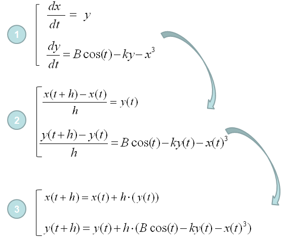
Once you get the set of multiple equations as shown in step (3), you can trace the values of each point of the solution by following procedure. I would not verbally explain much about this process, just pick any of the differential equation and try this process on your own. Otherwise you would never understand this process. Use this example just as a cheatsheet when your memory fades away.
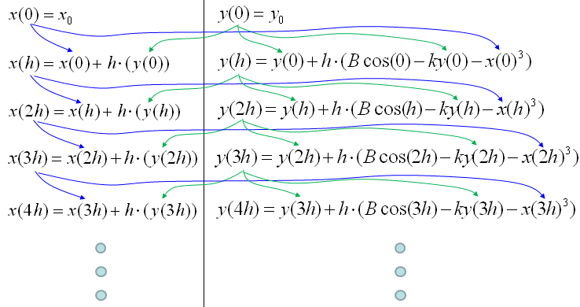
If you understood the logics shown just above, you can calculate each of the steps even with Microsoft Excel as shown below. I put the link so that you can download my spreadsheet but I strongly recommend you to try this on your own first.

Download this Excel File : Click here.
Would this be simple enough for you ? If you say "No", it is true. If you say "YES", it would be true. It would take a little while and a certain amount of effort to understanding a new concept however simple it is. Just don't run away and give it a try.
Somebody would ask "Is this all for getting numerical solutions for a differential equation ?". Is it realy simple like this to get a solution for any differential equations (ordinary differential equation, more specifically)? If it is the case, why our numerical method text book is so thick ?"
Good Question. Just in terms of concept of numerical method this is almost whole story, but in terms of applying this method to real life problems there are some practical issues with the basic method that I explained above.
i) Issue 1 : Sometimes there is a situation where the function (solution to the differential equation) can be very fast chaning function. For example, a function oscillating with high frequency. Of course you can still use the basic method explained above with very small 'h' value. But in this case, the amount of time you would need to get the solution will be exponentially long. So it would be a little impractical in this case. If you are specifically interested in this issue and solution for it, try searching "Runge-Kutta" method.
ii) Issue 2 : Basically a numerical solution is to find a solution at many discrete points. It is not the continous solution. This gives you a problem. For example, let's assume that you got the solution of a differential equation at the points of independent variable (e.g x), x = 0.1, 0.2, 0.3, 0.4, 0.5 ..... What if I want to get the solution at x = 0.25 ? Do I have to calculate the whole process with h = 0.05 ? It is possible but it is impractical. Then how we get the solutions at the points that was not calculated ? The simplest and most widely used method is to use "interpolation" method.
In short, I would say your numerical method book for differential equation would get thick largely due to the two issues that I desribed above and I will explain these issues more detail (with illustrations) later. For now, understanding the basic process very clearly would be the highest priority.